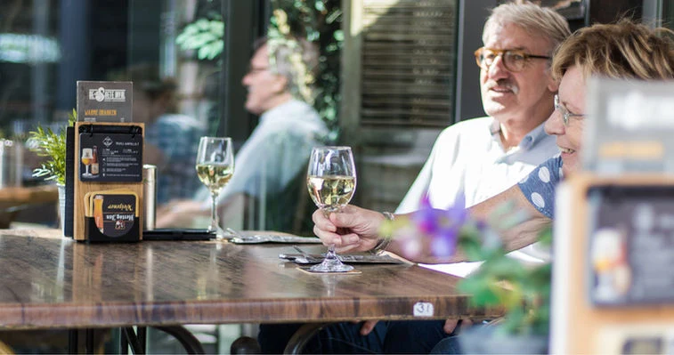
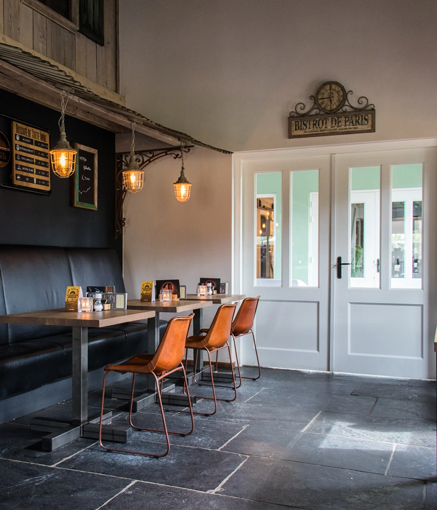
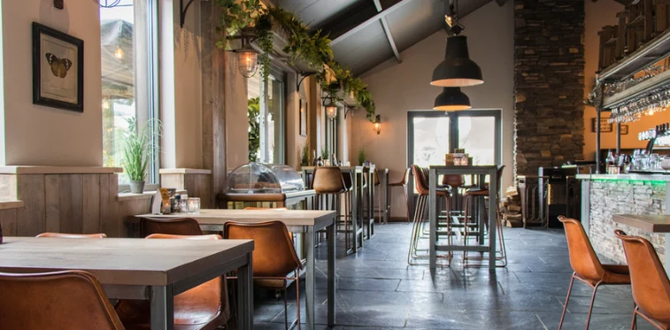
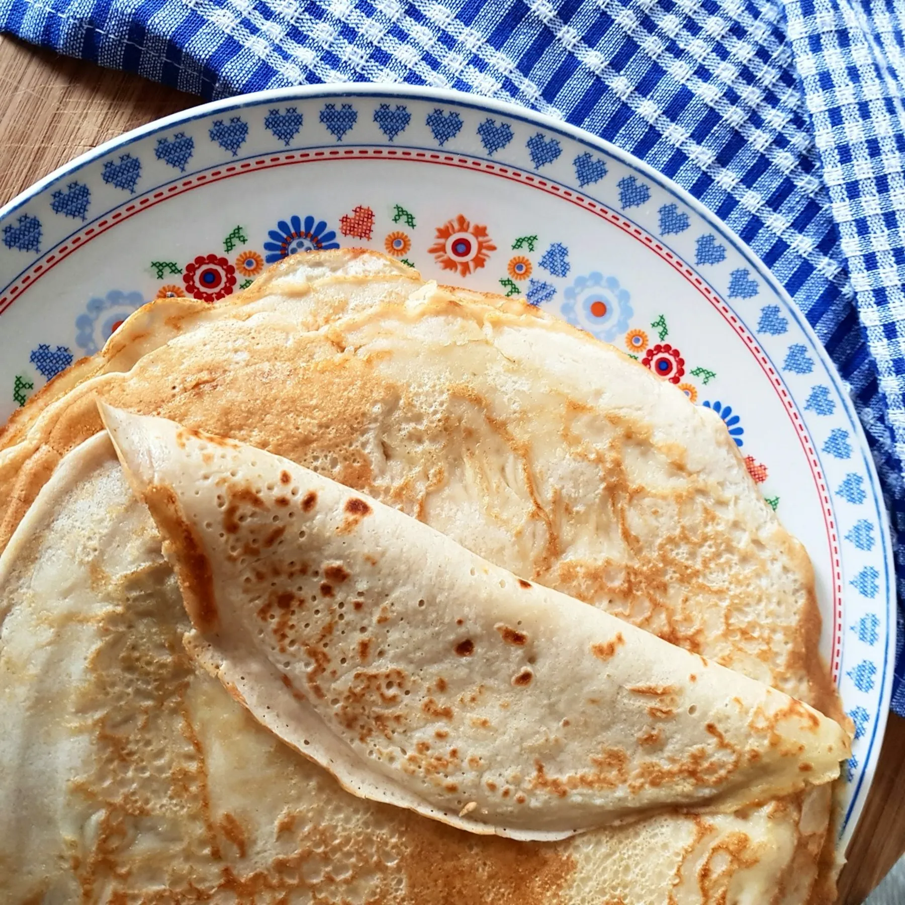
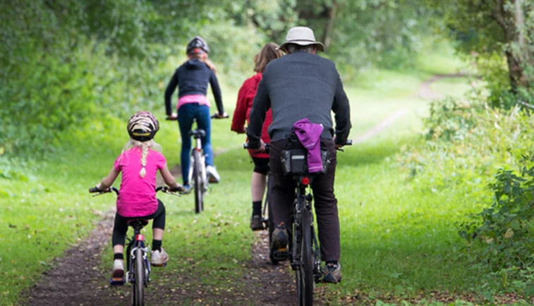

Natuurpoort Vennenhorst, Someren
Lekker even weg in Someren
Een vers gemalen kopje koffie, een bourgondische lunch of een van onze pannenkoeken. In het boscafé, de serre of buiten op het terras, met uitzicht op het bos.
Elke dag open van 10:00 tot 21:00 uur. Reserveren hoeft niet, je loopt gewoon binnen.

Een pleisterplaats aan de rand van het bos
Natuurpoort Vennenhorst met boscafé De Soete Inval is een bijzondere aanrader. Vanaf hier verken je recreatiegebied de Heihorsten, met diverse leuke vennetjes, waarvan het Keelven de grootste is. Geliefd bij wandelaars en fietsers, met een uitgebreid ATB-netwerk en diverse ruiterroutes.
Even nagenieten van een wandeling of fietstocht, met uitzicht op de bosrijke omgeving. Je vindt hier ook toiletten en toeristische informatie.
- Boscafé, serre en terras binnen of lekker in het zonnetje
- Speeltuin voor de kinderen
- Honden welkom aangelijnd en onder toezicht
- Niet reserveren gewoon binnenlopen


Pannenkoeken
Van een naturel voor de kleinste tot de Bokkenrijder of het Keelven. Te bestellen van 12:00 tot 15:00 en van 16:30 tot 19:30 uur.
Glutenvrij of lactosevrij + 1,00. Vegan + 1,00.

Zoet
- Naturel9,75
- Gember11,25
- Rozijnen11,25
- Nutella11,75
- Ananas12,25
- Peer met chocoladesaus12,75
- Kersen13,75
- Ijs en slagroom erbij3,50supplement
Appel
- Appel11,50met kaneelsuiker
- Appel en rozijnen12,75
- Appel en spek13,75
- Appel en kaas13,50
Kaas
- Kaas11,50
- Kaas en spek13,75
- Kaas en ham13,75
- Kaas en ananas13,75
- Kaas, ham en ananas15,25
- Kaas en gember13,75
- Kaas en ui12,75
Hartig
- Spek12,00
- Ham12,00
- Spek en uien13,75
- Spek en champignon13,75
- Spek, champignon en ui15,75
- Champignon en ui12,75
- Champignon, prei en kaas15,75
Speciaal
- Peelstreuf16,50spek, kaas, uien, champignon
- Bokkenrijder17,75spek, geitenkaas, rucola, honing
- De Soete Inval17,75peer, geitenkaas, pecannoten
- Boerenpannenkoek16,00spek, uien, ananas
- Kempenaer15,75spek, prei, champignon
- Wildpannenkoek19,50wildragout, gepickelde rode kool (seizoen)
- Het Keelven16,50bloedworst, spek, appel (seizoen)
- Paddenstoelenpannenkoek18,50gebakken paddenstoelen, Old Amsterdam, spekjes, truffelmayo, rucola
Uit de wereld
- Franse18,50brie, walnoot, honing, rucola
- Noorse20,50gerookte zalm, heksenkaas, sla
- Amerikaanse19,50pulled chicken, kaas, BBQ-saus
- Turkse19,50kipshoarma, ui, knoflooksaus, sla
- Oostenrijkse14,50warme appelcompote, vanille-ijs, caramelsaus
Voor kinderen: kinderpannenkoek naturel 6,00, met keuze uit diverse ingrediënten vanaf 6,50.
Menukaart
Van koffie met vlaai tot een hertensukade met rode wijnjus. De keuken is elke dag open van 12:00 tot 19:30 uur.
Koffie
Havermelk + 0,60. Alle koffies kunnen ook decaf, + 0,25.
- Koffie3,40
- Espresso3,40
- Dubbele espresso4,50
- Cappuccino3,90
- Koffie verkeerd3,90
- Flat white4,70
- Latte macchiato4,75
- Caramel latte5,25
- White chocolate latte5,25
- Hazelnut latte5,25
- Latte van het seizoen5,25
- Chai latte4,00
- Dirty chai latte5,25
- IJskoffie6,50in het seizoen
- Schrobbeler koffie7,75koffie met slagroom en Schrobbeler
- Irish, Italian, French, Spanish of Baileys coffee9,00
Thee & chocomel
- Thee3,25diverse smaken
- Verse muntthee4,15
- Verse gemberthee4,15
- Verse munt- en gemberthee4,40
- Verse gemberthee met sinaasappel4,40
- Warme chocomel3,75
- Warme chocomel met slagroom4,50
- Warme chocomel met hazelnoot4,25
- Warme chocomel met een kleintje rum7,00
Lekker voor erbij
- Cake2,50
- Vlaai4,00
- Gebakvanaf 4,00
- Worstenbroodje3,95vanaf 10:00 uur
Brood en zo 12:00 – 15:00
Open sandwiches van zuurdesembrood.
- Avocadospread11,25gekookt ei, zongedroogde tomaat, pittenmix, tortillacrunch
- Geitenkaas12,25peer, vijgenchutney, walnoot, rucola
- Brie12,75walnoot, rucola, gepickelde ui
- Tonijnsalade12,25huisgemaakt, kappertjes, rode ui
- Gerookte zalm15,75huisgerookt, heksenkaas, zoetzure ui
- Carpaccio15,75truffelcrème, Old Amsterdam, rucola, pittenmix
- Krokante kipreepjes13,75pikante mayo
- Brabantse bal13,75truffelmayo, Old Amsterdam, rode ui zoetzuur
- Brood met kroket8,00 / 13,001 of 2 kroketten
- Brood met garnalenkroket11,50 / 16,501 of 2 garnalenkroketten
Lunch en zo 12:00 – 15:00
Tip voor erbij: een minisoepje, 3,75.
- Loaded rookworst13,75broodje, zuurkool, rode kool, mosterdmayo, uitjes
- Spekpannetje13,25buikspek, brood
- 12 uurtje14,50brood, ham, kaas, gebakken ei, kroket
- 12 uurtje vis17,50brood, gerookte zalm, heksenkaas, gekookt ei, garnalenkroket
- Uitsmijter12,75ham en/of kaas
- Tosti8,50ham en/of kaas
- Tosti Hawaï9,50ham, kaas, ananas
- Tosti De Soete Inval10,00ham, kaas, gebakken ei
- Tosti geitenkaas12,25vijgenchutney, walnoot, honing
- Tosti pulled chicken13,25cheddar, BBQ-saus
Pinsa 12:00 – 15:00 en 16:30 – 19:30
Lauwwarm, knapperig Italiaans brood.
- Caprese15,75tomaat, mozzarella, pesto, aceto balsamico
- Gerookte zalm16,75huisgerookt, tomaat, zoetzure ui
- Tuna melt15,75tonijnsalade, tomaat, kaas
- Pulled chicken16,75tomaat, cheddar, BBQ-saus
- Rookworst16,75zuurkool, mosterdmayo, rode ui
Salades 12:00 – 15:00 en 16:30 – 19:30
Met brood en boter.
- Salade kip17,50krokante kipreepjes, pikante mayo
- Salade uit de zee19,50gerookte zalm, tonijnsalade, forel, gekookt ei
- Boerensalade16,50spek, Old Amsterdam, zoetzuur, ei, komkommer, tomaat, croutons
- Salade geitenkaas16,50peer, vijgenchutney, walnoot, honing
- Salade paddenstoelen16,50Old Amsterdam, croutons, truffelmayonaise, pittenmix
Soepen 12:00 – 19:30
Met brood en boter.
- Tomatensoep7,50 / 9,50normaal / groot
- Soep van de dag8,00 / 10,00normaal / groot
Sneukelen vooraf 16:30 – 19:30
- Brood met smeersels6,00
- Plankje met Parmaham8,50briochebrood, aceto balsamico
- Camembert uit de oven12,50vijgenchutney, briochebrood
Hoofdgerechten 16:30 – 19:30
Alle hoofdgerechten met frites en bijpassend garnituur.
- Zalmfilet26,50saus van prei en mosterdzaad
- Buikspek26,50zachtgegaard buikspek, bloedworst, appelstroopsaus
- Wildragout met brood26,50in het seizoen
- Hertensukade26,50zachtgegaard, wildstoof, rode wijnjus
- Eendenbout26,50geconfijt, saus van kers en kaneel
- Stamppot van de week18,50vraag ernaar bij de bediening
- Saté van knolselderij23,75atjar van rode kool, saus van gember en ketjap, cassavekroepoek, kokos en pinda
- Extra schaaltje salade5,00
Ook 's avonds: pinsa, salades en soep (zie Lunch) en natuurlijk pannenkoeken.
Voor de kleine gasten 12:00 – 15:00 en 16:30 – 19:30
- Kroket met frites8,75
- Frikandel met frites8,75
- Krokante kipreepjes met frites8,75
- Oesterzwam-bitterballen met frites8,75
- Kinderpannenkoek naturel6,00
- Kinderpannenkoekvanaf 6,50keuze uit diverse ingrediënten
Desserts 15:00 – 20:00
De prijzen van de desserts vind je op de kaart in het boscafé.
- Dame blancheroomijs, slagroom, warme chocoladesaus, ook als mini
- Coupe stroopwafelcaramelijs, stroopwafel, pecannoten, caramelsaus, slagroom, ook als mini
- Tarteletteganache van frambozen en chocolade, stracciatella-ijs, coulis van rood fruit
- Mislukte appelcakewarme appelcompote, cakebeslag, vanille-ijs, crumble
- Kinderijsjevanille-ijs, slagroom
Barbites 12:00 – 20:00
Ook lekker als voorgerecht om te delen.
- Bitterballen6,50 / 9,00 / 12,006 / 9 / 12 stuks
- Oesterzwam-bitterballen7,00 / 10,00 / 13,006 / 9 / 12 stuks
- Krokante kipreepjes7,00 / 10,00 / 13,006 / 9 / 12 stuks
- Frikandellen6,50 / 11,508 / 16 stuks
- Borrelhapjes mix9,5010 stuks
- Breekbrood6,00truffelmayo, kruidenboter
- Droge worst5,25
- Kaasblokjes5,50jonge kaas
- Nacho's10,00tomatensalsa, cheddar, guacamole, zure room, crispy ui, jalapeños (extra pulled chicken + 3,75)
- Borrelplank16,50kaasblokjes, droge worst, gefrituurde hapjes, Parmaham, briochebrood
Frisdranken
- Pepsi cola of Pepsi zero3,40
- Sisi of Seven Up zero3,40
- Lipton ice tea of ice tea green3,60
- Tonic, bitter lemon of ginger ale3,60
- Rivella3,60
- Cassis3,60
- Jus d'orange3,75
- Appelsap3,60
- Karaf water2,501 liter
- Sourcy blauw of rood3,10
- Sourcy blauw of rood7,000,75 liter
- Fristi of Chocomel3,60
- Melk3,00glas
- Ranja3,15
Cocktails & mocktails
- Aperol spritz9,75
- Bobby's Rose10,50Bobby's gin, rose lemonade, citroen, komkommer, munt
- Sicilian spritz10,50limoncello, rose lemonade, citroen, munt
- Bobby's gin-tonic11,50Bobby's gin, tonic, sinaasappel, rood fruit, munt
- Schrobbèler ginger cocktail11,50Schrobbèler, ginger ale, sinaasappel
- Limonata 0%6,00elderflower, Rivella, citroen, munt
- Vanille Rose 0%6,50vanille, rose lemonade, citroen, komkommer, munt
Bier van de tap
- Hertog Jan3,955,1%
- Leffe blond5,956,6%
- Leffe dubbel5,956,5%
- Hoegaarden witbier5,955%
- Seizoensbiervanaf 6,00
Bier op fles
- Liefmans5,753,8%
- Radler4,252%
- Tripel Karmeliet6,758,4%
- Seizoensbierenvanaf 5,50zie de krijtborden
Streekbieren
- Eeuwig Zonde blond5,956,3%
- Eeuwig Zonde dubbel5,957%
- Soete Tripel6,508,2%
- Rufus Prufus blond5,956%
- Rufus Dreumes IPA6,257%
- Rufus T'ism tripel6,5010%
- Rufus Macker amber6,256,7%
- Rufus Kwart quadrupel7,2513%
Alcoholvrij en -arm
- Radler 0%4,00
- Leffe blond 0%5,50
- Liefmans 0%5,75
- Tripel Karmeliet 0,4%6,50
Wijn per fles
Liever een glas? Vraag de bediening naar de wijn per glas.
- Decanal Chardonnay28,00wit, Italië
- Pinot Grigio32,00wit, Italië
- Moscato dolce28,00wit, zoet, Italië
- Chiaretto Bardolino30,00rosé, Italië
- Decanal Merlot28,00rood, Italië
- Passo del Sud Primitivo32,00rood, Italië
- Cava30,00mousserend
Aperitieven & likeuren
- Port rood of wit5,75
- Campari5,50
- Jonge jenever4,00
- Jägermeister4,00
- Schrobbèler4,25
- Limoncello6,00
- Bacardi6,00
- Tia Maria6,50
- Licor 43 of Baileys6,50
- Amaretto of Sambuca6,50
- Cointreau of Grand Marnier7,00
- Johnnie Walker7,00
Eén rekening per tafel, apart afrekenen is niet mogelijk. Gerecht delen? Extra couvert 1,50. Glutenvrij brood + 1,00. Een aantal gerechten kan vegetarisch, vraag het de bediening.
De originele kaarten: menukaart (pdf) en pannenkoekenkaart (pdf)
Adventure minigolf, Pitpat en jeu de boules
Naast wandelen en fietsen kun je op Natuurpoort Vennenhorst ook sportief recreëren. Nieuw is onze adventure minigolfbaan met 18 holes. Je kunt biljartgolf spelen op de 18 Pitpat-tafels of een potje petanque op onze jeu-de-boulesbaan. Leuk vermaak voor jong en oud.
Open van 10:00 uur tot zonsondergang (uiterlijk 20:00 uur). Info en verhuur via de kiosk.
Tarieven
| Midgetgolf adventure baan, 18 holes | € 8,50 p.p. |
|---|---|
| Midgetgolf met kinderstok | € 6,50 p.p. |
| Biljartgolf 18 Pitpat-tafels | € 6,50 p.p. |
| Petanque huur ballen | € 2,50 |
Met een groep vanaf 25 personen? Er zijn arrangementen, ook samen met eten en drinken. Zo werkt het

Wandelen en fietsen vanaf de natuurpoort
Ontdek de prachtige omgeving van Someren. Te voet voor diverse themawandelingen of een route via de wandelknooppunten. Met de fiets door een aantrekkelijk landschap met bossen, vennen en heide, en er zijn routes voor terreinfietsers en ruiters.
De Soete Inval is het startpunt voor een tocht naar de Lieropse en Strabrechtse Heide, met het grootste bosven van Europa: het Beuven. Met bijzondere flora en fauna. Fiets je verder, dan kom je langs dorpjes als Lierop, Heeze, Mierlo en Geldrop.
- De Heihorsten
- Het Keelven
- Lieropse Heide
- Strabrechtse Heide
- Het Beuven
Een dagje uit met familie, vrienden of collega's
Reserveren voor het boscafé, het terras of de activiteiten is niet mogelijk: je mag gewoon binnenlopen. Kom je met 25 personen of meer? Dan zijn er groepsarrangementen, ook in combinatie met minigolf, Pitpat of jeu de boules. We maken graag een passend arrangement.
Via info@soeteinval.nl
Kom jij bij ons werken?
Kom je uit de buurt, of vind je het de moeite waard om even te reizen? Dan kan De Soete Inval toppers zoals jij goed gebruiken. We zoeken altijd sterspelers die ons team komen versterken.
Je krijgt een goed salaris, gunstige werktijden, een leuke fooi, een gezellige werksfeer, doorgroeimogelijkheden en nog veel meer.
Bel 0493 49 63 43 of mail naar info@soeteinval.nl, dan zien we je graag op gesprek.
Openingstijden
- Boscafé en terras
- elke dag 10:00 – 21:00
- Keuken
- elke dag 12:00 – 19:30
- Midgetgolf en biljartgolf
- 10:00 – zonsondergang (uiterlijk 20:00)
Contact
Bosrandweg 6
5711 RJ Someren
0493 49 63 43
info@soeteinval.nl